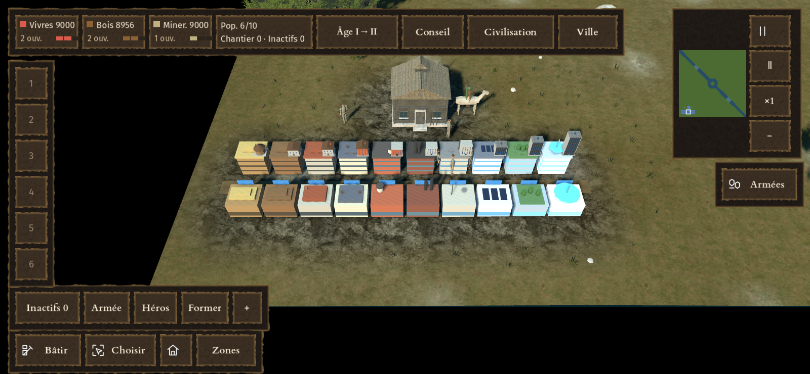
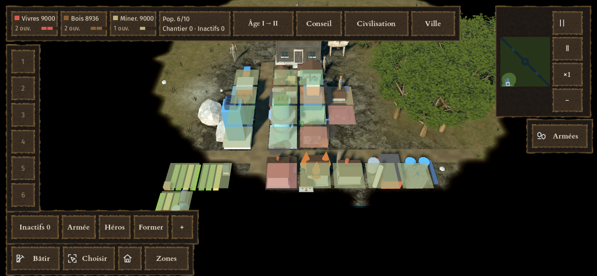

PROJET COMPLET · 0.20.0 CANDIDATE · LOTS A ET B · ANDROID NOT_RUN
Vous peignez les zones ; la ville se construit seule, vit et traverse les âges.
Captures réelles du jeu dans Godot 4.7.2 (OpenGL logiciel sur Linux). Paysage : 1600×740 ; portrait : 740×1600. Les quartiers montrés sont préparés pour la capture (plusieurs âges, niveaux et états réunis) ; le rendu, les routes, le calque et les filtres sont ceux du jeu.
Les 10 âges, de gauche à droite
La même parcelle d’habitat (en haut) et de commerce (en bas), niveau IV, de l’âge I à l’âge X : couleurs et toitures propres à chaque âge
Un filtre de la carte : l’état des bâtiments
Vert : en état ou prospère · orange : dégradé, chantier · rouge : brûlé, abandonné, en ruine
Un quartier (0.19.0)
Routes reliées au centre, habitat, commerce, industrie, champs ; un chantier, des ruines, un incendie
Le mode Zonage (0.19.0)
Types de zone, outils, demande, fiche du quartier ; calque coloré seulement dans ce mode (0.20.0 : bouton « Filtre » en plus)
En portrait (0.19.0)
Mêmes boutons, barre en pleine largeur
Aucun APK n’accompagne cette version. Essais sur téléphone : NOT_RUN. Aucun contenu d’un jeu existant n’a été repris.